AlertNow
각 서비스들의 상태를 확인할 수 있고 서비스에서 발생한 알람의 장애 현황 및 이력 관리를 할 수 있습니다.
접속
OpsNow 가입 후, AlertNow 서비스 신청 고객의 경우, 서비스 영역에 아래와 같이 AlertNow 서비스가 노출이 됩니다.
“AlertNow” 선택하여 서비스로 접속 합니다.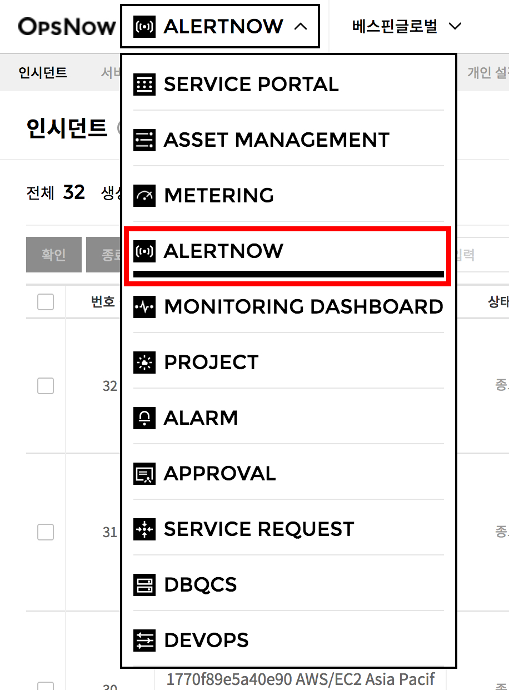
메뉴 구성
AlertNow 각 서비스 메뉴 구성은 다음과 같습니다.
항목 설명 Incidents Alert 수집 시 Incident Definition Policy에 의해 발급된 티켓의 상태를 관리 합니다.
- Incident Definition Policy
- Service Routing Rule
- Urgency Rule
- Suppression Rule
- Incident Definition Policy는 고객이 설정 가능합니다.
Services 고객이 설정한 Service 단위로 Incident를 상태를 관리 합니다.
Service는 Integration에서 발생하는 Incident를 관리하기 위한 단위로, 실제로 사용자가 관리하는 서비스나 애플리케이션이 될 수 있고 그 외에도 사용자의 편의에 따라 자유롭게 활용할 수 있습니다.- 구성
- Escalation Rule /Incident Generation Rule
Escalations Incident 발생 시 단계별로 이를 처리할 담당자 및 담당자가 처리해야 할 Action과 시간(Timeout)을 설정하여 Rule로 관리 합니다. Integrations 3rd Party(외부) 모니터링 툴에서 발생하는 알람을 AlertNow에 연동하기 위해서는 기본적으로 Integration을 설정해야 합니다. Integration 설정 정보를 관리 합니다.
- 구성 필수 요소 : Service
Extensions Extension은 AlertNow 내에서 생성된 특정 데이터를 외부 Tool이나 서비스로 Outgoing할 수 있도록 하는 기능 입니다. Personal Settings 개인 정보 및 Incident에 대한 Notification Rule에 대한 개인화 기능을 제공 합니다. - Incident Definition Policy
Incident
개요
Incidents 메뉴를 통해 각 서비스에서 발생한 Alert들과 incident 들의 목록을 확인할 수 있습니다. 사용자는 Incidents 메뉴를 통해 처리해야 할 문제를 확인하고, 각 문제들의 처리 상태를 기록할 수 있습니다.
Alert
CloudWatch, Azure Alert, UIM 등의 Monitoring Tool이나 기타 서비스에서 발생한 알람을 Integration 설정으로 Alarm Event를 수신 받은 경우, 이를 Alert으로 생성합니다.
- Alert 은 Raw Data 이며, 사용자가 임의로 Data를 변경하거나 생성된 Alert 을 삭제할 수 없습니다.
- Alert 을 기준으로 Incident를 생성합니다. 하지만 모든 Alert을 Incident로 생성하지 않으며, Incident Generation Rule 에 부합하는 Alert을 Incident로 생성합니다.
- Alert 은 사용자에게 Notification을 전달하지 않으며, 해당 Alert 을 통해 Incident 가 생성되어야 사용자에게 Notification 을 전달합니다.
사용자는 필요에 따라 서비스 별로 Alert 이 발생하지 않도록 Maintenance를 설정할 수 있습니다.
- 릴리즈, DB 작업, 인프라 작업, 보안 작업 등의 일정을 등록하여 해당 기간에 Incident의 발생을 억제할 수 있습니다.
- Maintenance 상태에서 발생한 Alert 은 Suppressed(by maintenance) 상태로 저장되며, Maintenance 일정으로 인해 해당 Alert 의 Incident가 생성되지 않았음을 확인할 수 있습니다.
Incident
Alert이 수집되면 사전에 설정한 Incident Generation Rule을 통해 Incident가 생성됩니다. Incident 생성 이후, 사용자는 Incident에 대한 처리 상황을 기록하거나 Escalation을 통해 공지를 받을 수 있습니다.
이 외에 중복되는 incident 생성을 방지 하기 위해 Auto closing, unclosed Incident suppress 기능을 제공하고 있습니다.
- Auto closing 기능

임계치 설정에 따라 Incident가 생성되어 있고, 만약 인스턴스 상태가 정상적으로 돌아오면, 기존에 생성된 Incident를 자동으로 closing 합니다. - Unclosed Incident Suppression
Cloudwatch로 수신되는 알람 중, Cloudwatch Alarm Name이 동일한 Alert에 대해 Close 되지 않은 Incident가 존재하는 경우, Incident 의 추가 생성을 제한하는 기능을 제공합니다.

또한 사용자는 사용자의 판단에 따라 Alert 이 생성되지 않은 상태에서도 수동으로 Incident 를 생성해 장애 대응을 진행할 수 있습니다. (추후예정)
- 사용자는 Alert Rule 에 의해 Incident 가 생성되지 않은 Alert 을 선택해 Incident 로 생성할 수 있습니다.(추후예정)
- 사용자는 Alert 이 생성되지 않은 상태에서도 수동으로 Incident 를 생성할 수 있습니다.(추후예정)
- 사용자는 이미 Incident 가 생성된 Alert 을 선택해 다른 Incident 에 연결할 수 있습니다.(추후예정)
Alert, Incident 관계
위 내용을 종합했을 때, Alert 과 Incident 는 아래의 관계를 가질 수 있습니다.
Alert 기준
Incident 생성 Alert : Generated Incident [ 1 : 1 ] 참조 Alert Alert : Referred Alert [ 1 : N ] (추후예정) 참조 Incident Alert : Referred Incident [ 1 : N ] (추후예정) Incident 기준
생성기준 Alert Incident : Triggered Alert [ 1 : 1 ] Incident 병합 Incident : Merged Incident [ 1 : N ] (추후예정) 참조 Incident Incident : Referred Incident [ 1 : N ] (추후예정) 참조 Alert Incident : Referred Alert [ 1 : N ] (추후예정)
Alert는 다음과 같은 Incident 생성 결과를 가질 수 있습니다.
- Incident 생성 Incident Creation
- 생성억제(생성제한 규칙) Suppressed (by suppression rule)
- 생성억제(유지보수) Suppressed (by maintenance)
- 생성억제(미종료 Incident) Suppressed (by unclosed)
Incident
접속 경로: Incident > Incident
Incidents 메뉴를 통해 생성된 Incident 들을 목록으로 확인할 수 있으며, Incident 별 상세 내용을 확인하고 처리 상태를 기록할 수 있습니다.
또한 기간, 키워드를 설정해 특정 Incident를 검색할 수 있습니다.
화면구성
Incident 메뉴는 아래와 이미지와 같이 크게 두 영역으로 구분됩니다.

Incident 메뉴 구성 항목 설명 No Incident 의 Serial Number를 표시합니다. Title Incident 의 제목을 표시합니다. Status Incident 의 상태를 표시합니다.
Incident 는 아래의 상태 값을 가집니다.- Opened
- Acknowledge
- Close
Created Incident 의 생성 날짜 및 시간을 표시합니다. Updated Incident 의 최종 업데이트 날짜 및 시간을 표시합니다. Urgency Incident 의 시급도를 표시합니다. Service Incident 가 발생한 서비스 이름을 표시합니다. Assignee Incident 의 담당자로 지정된 사용자 이름을 표시합니다. Incident Detail
Incident List 에서 선택한 Incident 의 상세 정보를 확인할 수 있습니다. 해당 영역은 사용자의 필요에 따라 확장해 큰 화면으로 확인할 수도 있습니다. Incident Detail에서는 아래의 정보를 확인할 수 있습니다.summary
항목 설명 Service Incident 가 발생한 서비스 이름을 표시합니다. Created Incident 의 생성 날짜 및 시간을 표시합니다. Urgency Incident 의 시급도를 표시합니다. Assignee Incident 의 담당자를 표시합니다. detail
항목 설명 Status Incident 의 상태를 표시합니다.
Incident는 아래의 상태 값을 가집니다.- Opened
- Acknowledge
- Close
Escalation Incident 에 설정된 Escalation Rule 을 표시합니다. Integration Incident 를 발생시킨 Integration 명을 표시합니다. Integration Type Incident 를 발생시킨 Integration Type을 표시합니다. Referenced alerts Incident 를 발생시킨 alert를 표시합니다. Message Alert 발생 시 첨부된 메시지를 표시합니다. Description Incident 의 설명을 표시합니다. 설명을 직접 입력할 수 있습니다.
Incident 상태
Incident 는 아래의 세가지 상태 값을 가지며, 상태에 따라 Title 영역을 다른 색상으로 표시합니다.
- Opened
새롭게 Incident 로 생성되어 아직 처리 전인 상태를 의미합니다.

- Acknowledge
장애 사실을 인지하고 담당자가 처리 중인 상태를 의미합니다.
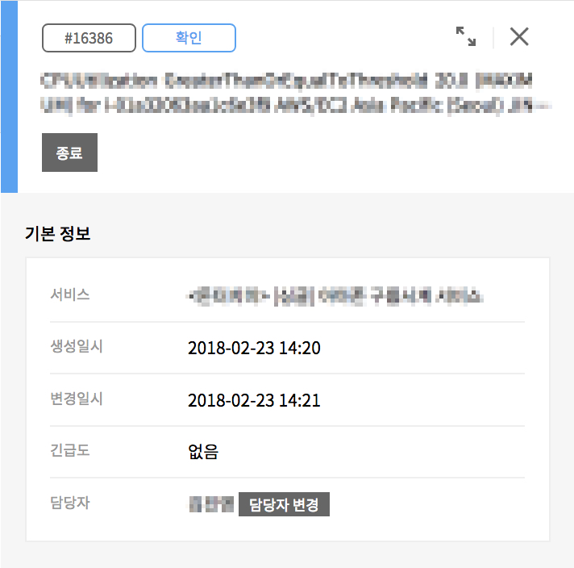 - Closed
장애 처리가 완료되어 종결된 상태를 의미합니다.
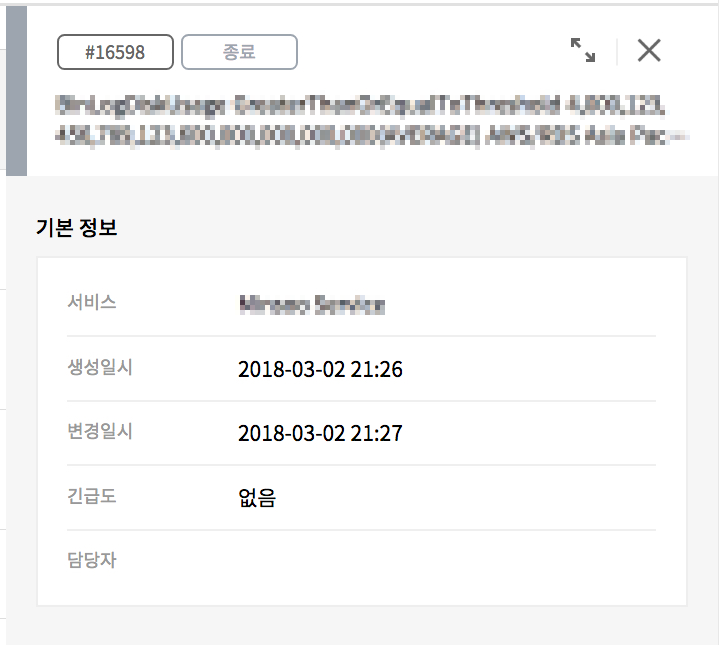
Incident 검색
사용자는 Incident 목록에서 Incident를 기간/키워드 조건을 설정해 incident를 검색할 수 있습니다. 검색 결과는 incident 목록에 바로 표시됩니다.
- 기간 검색

기간 선택 Preset
사용자가 선택 가능한 기간을 Preset 형태로 제공합니다. 사용자는 아래의 기간 Preset 을 선택할 수 있으며, 선택 시 기간 선택 영역에 선택된 기간이 표시됩니다.Preset 기간 Today 현재 날짜를 선택한다. Yesterday 어제의 날짜를 선택한다. This week 현재 시간을 기준으로 이번 주를 선택한다. This month 현재 시간을 기준으로 해당 월을 선택한다. Last Week 현재 시간을 기준으로 지난 주를 선택한다 Last Month 현재 시간을 기준으로 지난 달을 선택한다. Custom(기간 선택)
사용자는 검색 시작/종료일 및 시간을 선택할 수 있습니다. 기간 선택 시 선택한 기간 내의 Incident 가 Incident 목록에 표시됩니다. 또한 사용자는 좌/우 화살표를 선택해 현재 설정된 날짜를 기준으로 이전/이후 주기를 설정할 수 있습니다.
키워드 검색
사용자는 키워드를 입력해 입력한 키워드와 일치하는 Incident를 검색할 수 있습니다. 선택한 기간의 Incident 중 입력한 키워드와 일치하는 Incident를 검색 결과로 표시합니다.- 상태 필터

목록 내 Incident 중, Assignee가 현재 로그인한 사용자인 Incident 만 필터링해 확인할 수 있습니다.- Assign to me
Incident 목록에서 Assignee가 현재 로그인한 사용자인 Incident 만 표시합니다.. - All
전체 Incident를 표시합니다.
- Assign to me
Incident 조작
목록 내 Incident 에 대해 아래의 작업들을 수행할 수 있습니다.
- 상태 변경
Incident 의 상태를 변경할 수 있습니다. 개별 Incident 의 상태를 변경할 수 있으며, 복수의 Incident 를 선택해 상태를 일괄 변경할 수 있습니다.- Incident 상태 변경
Incident Detail 화면에서 Title 하단의 버튼으로, 상태를 변경 할 수 있습니다.

- Opened 상태인 Incident 는 Acknowledge, Close 상태로 변경할 수 있습니다.
- Acknowledge 상태의 Incident 를 Close 상태로 변경할 수 있습니다.
- Close 상태의 Incident 는 상태를 변경할 수 없습니다.
- 복수 Incident 상태 일괄 변경
Incident List 에서 상태를 변경할 Incident를 선택해 Incident 의 상태를 일괄 변경할 수 있습니다.

복수 Incident 선택 후, Incident List 좌측 상단의 [Acknowledge] [Close] 버튼을 클릭해 상태를 변경할 수 있습니다.
- Incident 상태 변경
- Assignee 지정 및 변경
Incident별로 Assignee를 지정하거나 변경할 수 있습니다. Incident Detail 화면의 [Assign] 버튼 클릭 시 Assignee를 지정할 수 있는 팝업이 표시됩니다.- Assignee를 지정할 Incident 선택
Assignee 항목에는 현재 지정된 Assignee 의 이름이 표시되며, [Assign] 버튼 클릭 시 Assignee를 변경할 수 있는 팝업이 표시됩니다.
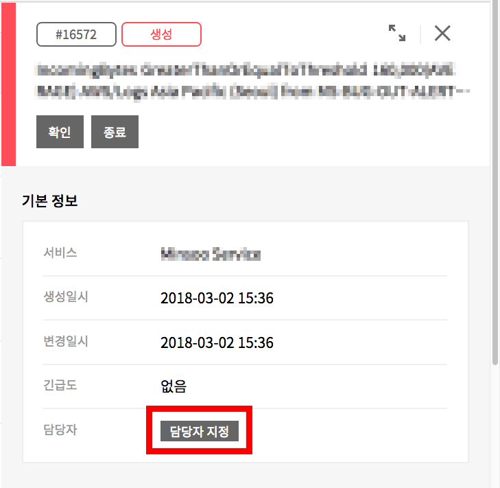 - Asignee 선택
Assign User 팝업을 통해 담당자를 검색 후 지정할 수 있습니다.
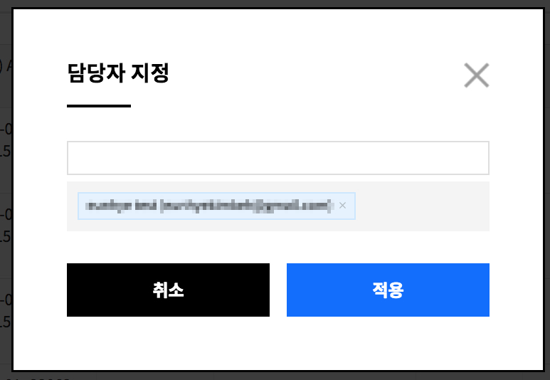
하나의 Incident 에 대해 복수의 Assignee를 지정할 수 없습니다. - 코멘트 작성
Incident에 대한 Comment를 작성할 수 있습니다.- Incident detail의 full screen으로 이동
Incident Detail 화면에서 Active History 탭의 COMMENT에서 입력
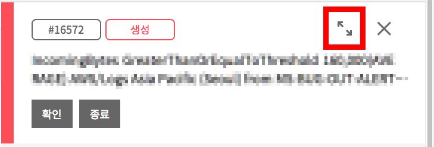 - Comment 입력 후 [Add] 버튼 클릭
- 입력된 Comment 확인
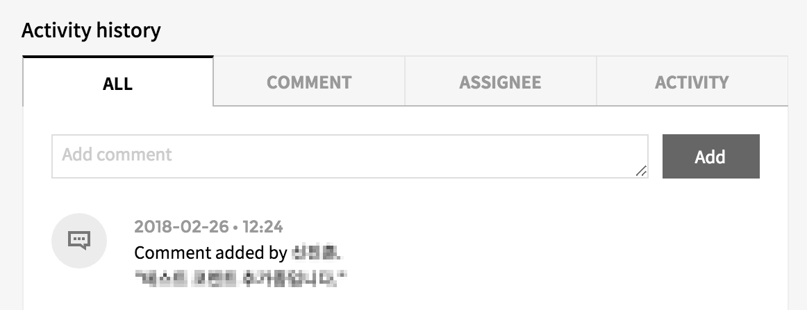 - Title 변경
사용자의 필요에 따라 각 Incident 의 Title을 변경할 수 있습니다.- Full Screen의 Title 영역에서 [수정] 버튼 클릭

- Title 수정 후, [완료] 버튼 클릭
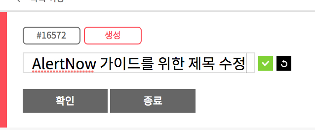 - 변경된 title 확인

- Full Screen의 Title 영역에서 [수정] 버튼 클릭
- Incident detail의 full screen으로 이동
- Assignee를 지정할 Incident 선택
- 연관 Alert 확인
각 Incident 의 연관 Alert 을 확인할 수 있으며, 각 Alert 의 Detail 화면으로 이동할 수 있습니다.- Incident 연관 Alert 확인

- 연관 Alert 클릭해 Alert 상세 정보 확인

- Incident 연관 Alert 확인
Alert
접속 경로: Incidents > Alerts
Alert 메뉴를 통해 Alert 들을 목록으로 확인할 수 있으며, Alert의 상세 내용을 확인할 수 있습니다. 또한 기간, 키워드를 설정해 특정 Alert을 검색할 수 있습니다.
화면구성
Alert 메뉴는 아래와 이미지와 같이 크게 두 영역으로 구분됩니다.

Alert list
기 발생한 Alert 들을 목록으로 확인할 수 있으며, 발생한 Alert 들을 검색할 수 있습니다. Alert List 에서 Alert 선택 시, 선택한 Alert의 정보가 Alert Detail 영역에 표시됩니다. Alert List 에서는 아래의 정보를 확인할 수 있습니다.No Alert 의 Serial Number 를 표시합니다. Title Alert 의 제목을 표시합니다. Status Alert 의 상태를 표시합니다. Created Alert 의 생성 날짜 및 시간을 표시합니다. Service Alert 이 발생한 서비스 명을 표시합니다. Integration Type Alert이 발생한 서비스의 Integration Type을 표시합니다. Alert Detail
Alert List 에서 선택한 Alert의 상세 정보를 확인할 수 있습니다. 해당 영역은 사용자의 필요에 따라 확장해 큰 화면으로 확인할 수도 있습니다. Alert Detail 에서는 아래의 정보를 확인할 수 있습니다.항목 설명 Incident creation Incident generation rule에 따라 incident 생성 결과를 표시합니다. Created Alert의 생성 날짜 및 시간을 표시합니다. Occurred Alert의 발생 날짜 및 시간을 표시합니다. Service Alert의 발생한 서비스 명을 표시합니다. Integration Alert의 Integration 을 표시합니다. Integration Type Alert 의 발생한 서비스의 Integration Type을 표시합니다. Region Alert의 발생한 지역을 표시합니다. Statistic type Cloud watch에 설정된 경보의 통계 타입을 표시합니다. Statistic Cloudwatch에 설정된 경보의 통계 설정 값을 표시합니다. Comparison operator Cloud watch에 설정된 경보의 임계치 설정 비교 연산자를 표시합니다. Period Cloudwatch에 설정된 경보의 기간을 표시합니다. Evaluation periods Cloud watch에 설정된 경보 임계치의 발생 횟수를 표시합니다. Message Alert의 상세 메시지를 확인할 수 있습니다. Description Alert의 상세 설명을 확인할 수 있습니다. Related IncidentAlert 과 연결된 Incident를 표시한다.
Alert 검색
사용자는 Alert List에서 기간/키워드 조건을 설정해 Alert을 검색할 수 있습니다. 검색 결과는 Alert 목록에 바로 표시됩니다.
- 기간 검색

기간 선택 Preset
사용자가 선택 가능한 기간을 Preset 형태로 제공합니다. 사용자는 아래의 기간 Preset 을 선택할 수 있으며, 선택 시 기간 선택 영역에 선택된 기간이 표시됩니다.Preset 기간 Today 현재 날짜를 선택한다. Yesterday 어제의 날짜를 선택한다. This week 현재 시간을 기준으로 이번 주를 선택한다. This month 현재 시간을 기준으로 해당 월을 선택한다. Last Week 현재 시간을 기준으로 지난 주를 선택한다 Last Month 현재 시간을 기준으로 지난 달을 선택한다. 기간 선택
사용자는 검색 시작/종료일 및 시간을 선택할 수 있습니다. 기간 선택 시 선택한 기간 내의 Alert이 Alert List에 표시됩니다. 또한 사용자는 좌/우 화살표를 선택해 현재 설정된 날짜를 기준으로 이전/이후 주기를 설정할 수 있습니다.
- 키워드 검색
사용자는 키워드를 입력해 입력한 키워드와 일치하는 Alert을 검색할 수 있습니다. 선택한 기간의 Alert 중 입력한 키워드와 일치하는 Incident를 검색 결과로 표시합니다.
Alert 조작
목록 내 Alert 에 대해 아래의 작업을 수행할 수 있습니다.
- 메시지 확인
발생한 Alert 에 대한 상세 메시지를 확인할 수 있습니다.- Alert Detail 화면에서 [Message] > [View] 버튼을 클릭합니다.
- 새 탭으로 상세 Message가 표시됩니다.

- Alert Detail 화면에서 [Message] > [View] 버튼을 클릭합니다.
- Description 입력
발생한 Alert 에 대해 상세 설명을 입력할 수 있습니다.- Alert Detail 화면에서 [수정] 버튼을 클릭합니다.

- Description 입력 후 [저장] 버튼을 클릭합니다.
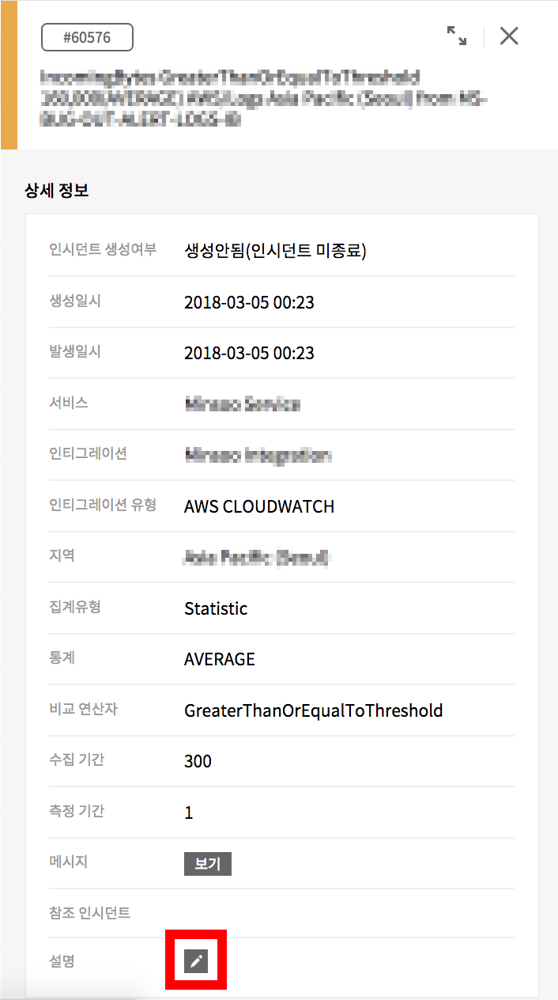 - 입력된 Description 을 확인합니다.

- Alert Detail 화면에서 [수정] 버튼을 클릭합니다.
- 연관 Incident 보기
선택한 Alert을 통해 생성된 Incident 들을 확인할 수 있으며, 각 Incident 의 상세 화면으로 이동할 수 있습니다.- Alert 연관 Incident 확인

- 연관 Incident 클릭해 Incident 상세 정보 확인

- Alert 연관 Incident 확인
Service
고객이 설정한 Service 단위로 Incident를 상태를 관리 합니다.
Service는 Integration에서 발생하는 Incident를 관리하기 위한 단위로, 실제로 사용자가 관리하는 서비스나 애플리케이션이 될 수 있고 그 외에도 사용자의 편의에 따라 자유롭게 활용할 수 있습니다.
Integration에 설정된 routing rule에 따라 Service로 분기 되어 incident를 관리 할 수 있습니다.
Service 생성을 위한 Use Case는 다음과 같습니다.
Use Case 1. Service menu에서 생성
- 1단계 : Services 메뉴 선택
Services 메뉴를 클릭 합니다.
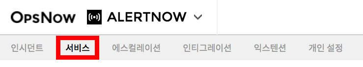 - 2단계 : 신규 Service 생성
“Create service” 버튼을 클릭 합니다.
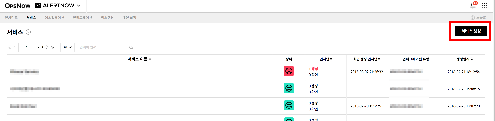 3단계 : Service를 생성
Service 생성을 위한 입력 항목은 다음과 같습니다.항목 설명 비고 Service name 고객이 생성하고자 하는 Service Name을 임의로 입력 합니다. 필수 입력 사항 Escalation rules - Escalation basic rules : Escalation 기본 규칙을 설정합니다.
생성된 Escalation rule이 없는 경우, Default Escalation Rule이 생성됩니다. - Add custom criteria : 사용자가 우선순위를 결정하여, 조건에 따라 Escalation을 선택 할 수 있습니다.
(선택 시 사용자가 설정한 조건의 규칙을 기본규칙보다 우선적으로 적용 됩니다.)
필수 입력 사항 Incident generation rules - Incident suppression rules
조건 항목( Alert Summary, Alert Metric Name, Alert Resource Id)가
연속해서 발생 할 경우, 기간(초)를 설정하여, incident 중복 생성을 방지 할 수 있습니다. - Incident urgency rules
Incident 의 시급도를 설정 할 수 있습니다. - Add custom criteria에서, 조건 항목( Alert Summary, Alert Metric Name,
Alert Resource Id)의 비교연산자 설정으로 시급도를 설정 할 수 있습니다.
옵션 입력 사항 
Escalation rule이 없는 경우 자동으로 Create Default Escalation Rule이 생성됩니다.
(Service생성자가 기본 수신자로 설정이 됩니다.)
Escalation이 있는 경우 “Save”를 Click 합니다.- Escalation basic rules : Escalation 기본 규칙을 설정합니다.
4단계 : 생성된 Service를 선택
생성된 Service를 Click 하면 다음과 같은 화면으로 이동 합니다.

각 Tap에 대한 내용은 다음과 같습니다.
항목 설명 비고 Incident 기간 및 Search 조건에 따른 Incident 상태를 확인 할 수 있습니다. Integration 해당 서비스의 Integration 정보를 확인 할 수 있습니다 Escalation rule in use 해당 서비스의 Escalation 정보를 확인 할 수 있습니다. Edit가능 Incident generation rules 해당 서비스의 incident 생성 룰을 확인 할 수 있습니다. Edit가능 5단계 : 생성된 Service에 Integration 설정
다음 안내 Use Case 2.를 참조 하시기 바랍니다.
Use Case 2. Integration 생성 시에 생성
- 1단계 : Integration 메뉴 선택
Integrations 메뉴를 클릭 합니다.

- 2단계 : 신규 Integration 생성
“Create Integration” 버튼을 클릭 합니다.
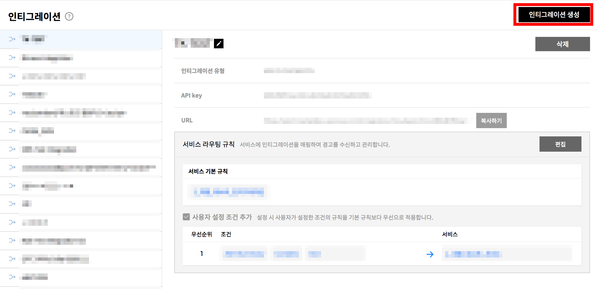 - 3단계 : AWS Cloud Watch 선택
Integration Type의 “Add Integration” 버튼을 클릭합니다.

4단계 : Integration 설정
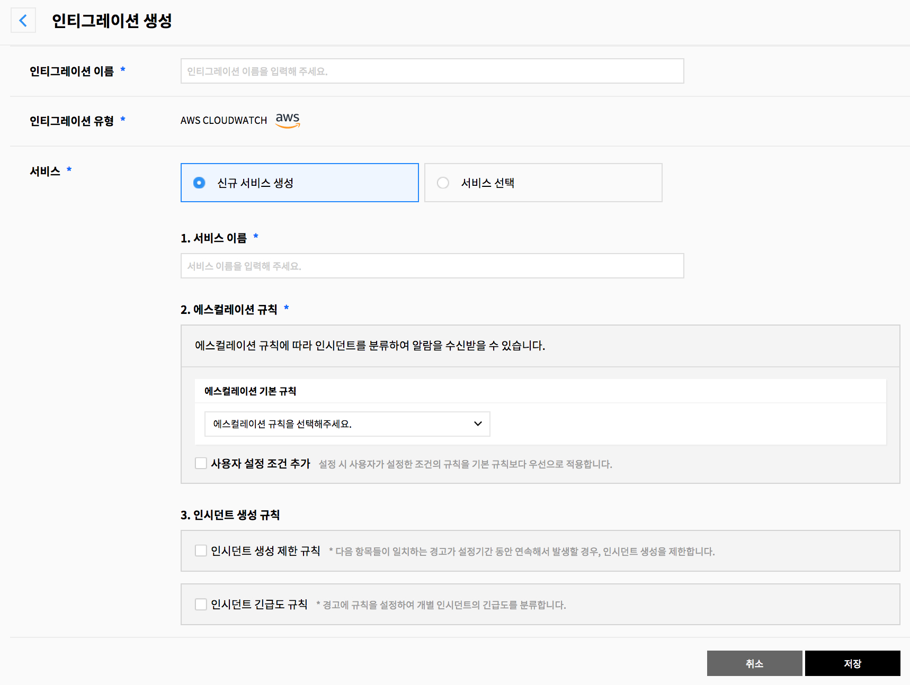Integration 설정을 위한 입력 항목은 다음과 같습니다.
Service는 여러 Integration을 Group화 하여 고객이 관리하고자 하는 고객 향의 서비스로 지정하여 Incident를 관리 할 수 있습니다.
항목 설명 비고 Integration Name 고객이 Integration Name을 설정할 수 있습니다. 필수 입력 사항 Integration Type 기 선택한 대상의 로고가 보입니다.
입력 및 수정 불가 사항 Service - Create Service 필수 선택 사항.
Integration 생성시, Service도 동시에 생성을 합니다. - Select Service
Integration 생성시, 기존에 있는 Service를 매핑 합니다.
중복 선택 불가. Creation Service화면은 다음과 같습니다.
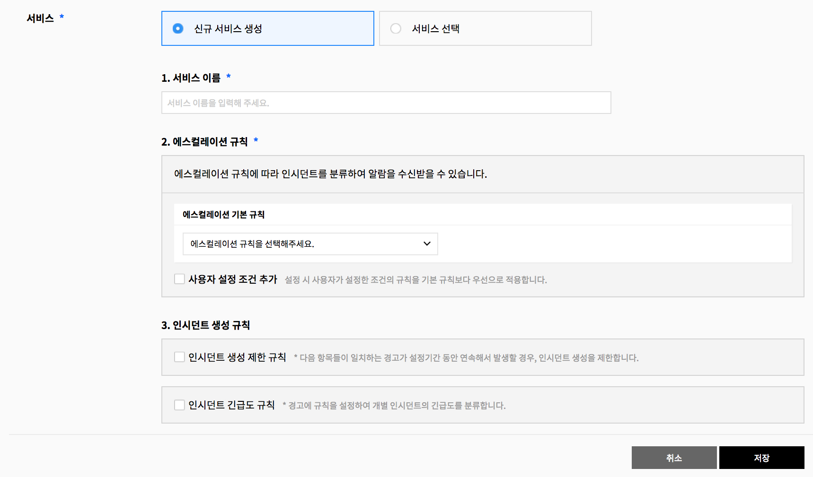항목 설명 비고 Enter a service name 고객이 생성하고자 하는 Service Name을 임의로 입력 합니다. 필수 입력 사항 Escalation rules - Escalation basic rules : Escalation 기본 규칙을 설정합니다.
- Add custom criteria : 사용자가 우선순위를 결정하여, 조건에 따라 Escalation을 선택 할 수 있습니다.
(선택 시 사용자가 설정한 조건의 규칙을 기본규칙보다 우선적으로 적용 됩니다.)
필수 입력 사항 Incident generation rules - Incident suppression rules
조건 항목( Alert Summary, Alert Metric Name, Alert Resource Id)가 연속해서 발생 할 경우, 기간(초)를 설정하여, incident 중복 생성을 방지 할 수 있습니다. - Incident urgency rules
Incident 의 시급도를 설정 할 수 있습니다. - Add custom criteria에서, 조건 항목( Alert Summary, Alert Metric Name, Alert Resource Id)의 비교연산자 설정으로 시급도를 설정 할 수 있습니다.
옵션 입력 사항 - Create Service 필수 선택 사항.
5단계 : 생성 Integration, Service 저장
“Integration Name”을 입력하고, 사용자의 설정에 따른 Service를 생성, 혹은 선택한 후에 우측 하단의 “SAVE” 버튼을 클릭 합니다.
Escalations
Incident 발생 시 단계별로 이를 처리할 담당자 및 담당자가 처리해야 할 Action과 시간(Timeout)을 설정하여 Rule로 관리 할 수 있습니다.
Escalation Policy 생성을 위한 Use Case는 다음과 같습니다.
| Case | 설명 |
| Use Case 1. “Escalations” 메뉴에서 생성 |
Escalation 메뉴에서 오른쪽 상위에 있는 “Create New Escalation” 버튼을 Click 합니다. 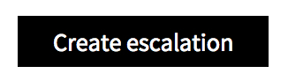 Escalation Policy를 생성 합니다. |
| Use case 2. “Service” 생성시, Default Escalation Rule 생성 |
Create service경우, 기존에 생성된 escalation rules가 없다면 “Default Escalation Rule”이 생성됩니다. |
| Use case 3. “Integration” 생성시, “Create Service”를 선택할 경우, 기존에 생성된 escalation rules가 없는 경우 |
Create Integration 하면서 동시에 Create Service 할 경우, 기존에 생성된 escalation rules가 없다면 “Default Escalation Rule”이 생성됩니다. |
Use Case 1. Escalations 메뉴에서 생성
- 1단계 : Escalation 메뉴 선택
Escalations 메뉴를 클릭 합니다.

- 2단계 : 신규 Escalation 생성
“Create new Escalation” 버튼을 클릭 합니다.
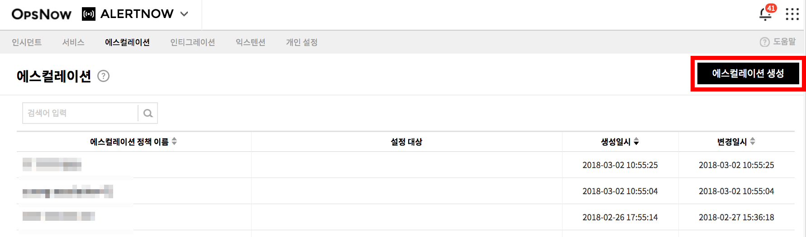 3단계 : Escalation Policy를 수립
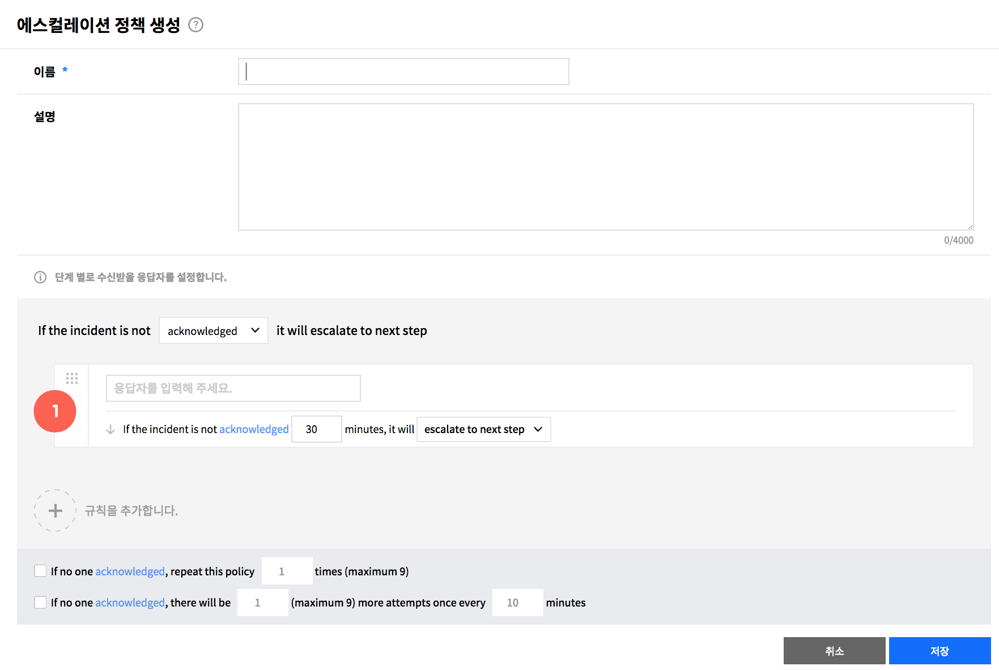
Escalation 설정을 위한 입력 항목은 다음과 같습니다.항목 설명 비고 Name 고객이 Escalation Policy Name을 설정할 수 있습니다. 필수 입력 사항 Description 해당 Escalation에 대한 설명을 추가 합니다. 옵션 사항 Rule 설정 If the incidents is not “acknowledged / closed” It will escalate to next step. - Acknowledged 상태가 아닌 경우,
- Closed 상태가 아닌 경우,
Escalation Policy를 적용 하도록 설정 합니다.
Responder(수신자 설정) 같은 회사 소속 User들 중에 선택 할 수 있습니다. 수신자를 여러 명 선택 할 수 있습니다. Policy 선택 시, 필수 설정 사항 Time Noti 를 전달할 Time 주기를 분 단위로 설정 할 수 있습니다. Policy 선택 시, 필수 설정 사항 Action Responder에게 Time 주기로 설정하여 Notification을 한 이후, Action을 “escalation to next step” / “repeat this step” 중 선택 할 수 있습니다. - escalation to next step : 다음 Escalation 단계로 수행 합니다.
- repeat this step : 현재 단계를 반복 합니다. 반복 주기를 시간 단위로 설정할 수 있습니다.
Policy 선택 시, 필수 설정 사항 추가 Option 설정 Escalation이 Action 및 추가 Escalation 단계까지 Escalate 됐는데도 아무런 조치가 취해지지 않는 경우, 다음의 옵션을 설정할 수 있습니다. - If no one acknowledged, repeat this policy (1) Times
> Escalation 1단계부터 마지막단계 까지 (1)회 다시 시작 합니다.
> (1) 횟수의 Max number은 9 입니다. - If no one acknowledged, there will be (1) more attempts once every (2) minutes
> Escalation 1단계부터 마지막 단계까지 (1)회 (2)분 간격으로 다시 시작 합니다.
> (1) 횟수의Max number은 9 입니다.
> (2)분의 시간 간격을 설정 할 수 있습니다.
옵션 설정 항목 4단계 : 생성 Escalation 저장
Single Escalation 설정을 아래와 같이 저장 합니다.
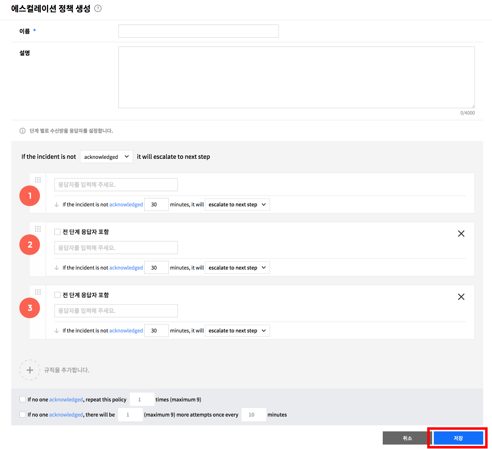
Use Case 2. “Service” 생성시 Default Escalation Rule 생성
- 1단계 : Services 메뉴 선택
Services 메뉴를 클릭 합니다.
- 2단계 : 신규 Service 생성
“Create service” 버튼을 클릭 합니다.
- 3단계 : Create Default Escalation Rule
Escalation rule이 없는 경우 자동으로 Create Default Escalation Rule이 생성됩니다.
(Service 생성자가 기본 수신자로 설정이 됩니다.)
※ 나머지 Service 생성은 Service 가이드 항목을 참고 해 주세요
Use Case 3. “Integration” 생성시, “Create Service”를 할 경우
1단계 : Integration 메뉴 선택
Integrations 메뉴를 클릭 합니다.
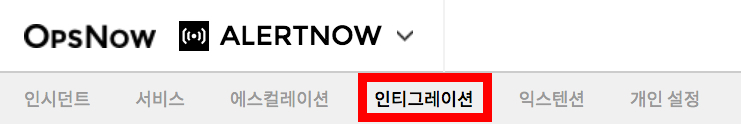2단계 : 신규 Integration 생성
“Create Integration” 버튼을 클릭 합니다.
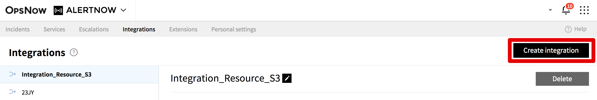3단계 : AWS Cloud Watch 선택
Integration Type의 “Add Integration” 버튼을 클릭합니다.
4단계 : Integration 설정
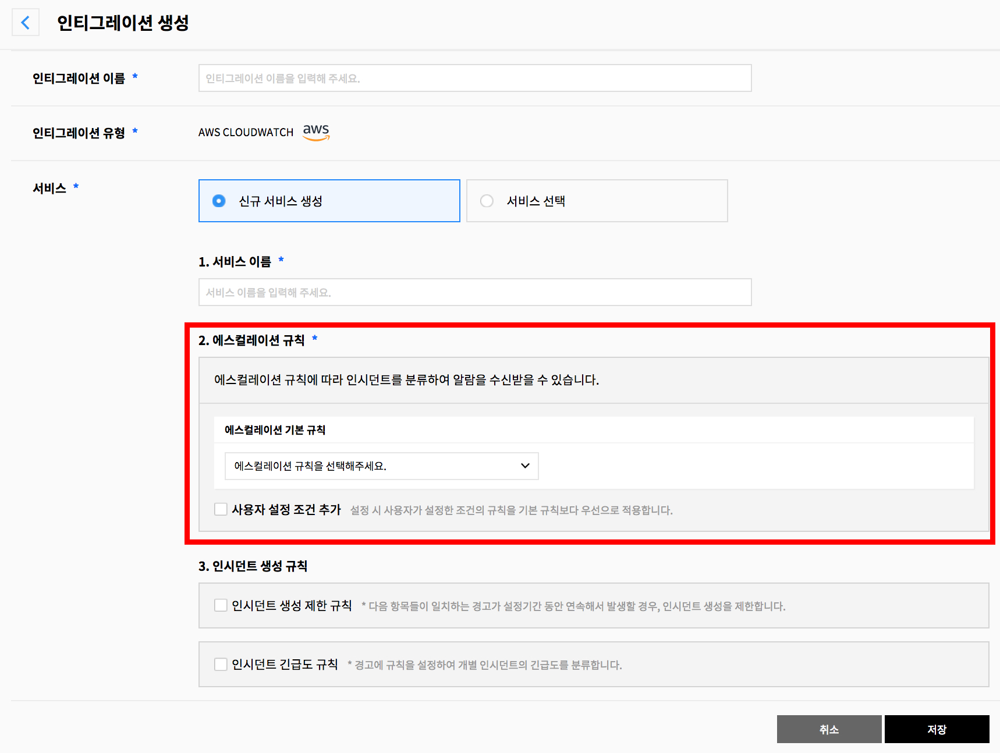Create Integration 하면서 동시에 Create Service 할 경우, 기존에 생성된 escalation rules가 없다면 “Default Escalation Rule”이 생성됩니다. (Service 생성자가 기본 수신자로 설정이 됩니다.)
※ 나머지 Integration 생성은 Integration 가이드 항목을 참고 해 주세요.
Integration
Integrations
사용자는 AlertNow가 제공하는 Integration Templates 목록 중 자신이 사용 중인 툴이나 서비스를 선택하여Integration 설정을 함으로써 해당 툴에서 발생 하는 Alert 을 AlertNow로 전달 하고 관리할 수 있습니다.
Integration 설정 가이드는 다음과 같습니다.
1단계 : Integration 메뉴 선택
Integrations 메뉴를 클릭 합니다.
2단계 : 신규 Integration 생성
“Create Integration” 버튼을 클릭 합니다.
3단계 : AWS Cloud Watch 선택
Integration Type의 “Add Integration” 버튼을 클릭합니다.
4단계 : Integration 설정
Integration 설정을 위한 입력 항목은 다음과 같습니다.
Service는 여러 Integration을 Group화 하여 고객이 관리하고자 하는 고객 향의 서비스로 지정하여 Incident를 관리 할 수 있습니다.항목 설명 비고 Integration Name 고객이 Integration Name을 설정할 수 있습니다. 필수 입력 사항 Integration Type 대상의 로고가 보입니다. 입력 및 수정 불가 사항 Service - Create Service
Integration 생성시, Service도 동시에 생성을 합니다. - Select Service
Integration 생성시, 기존에 있는 Service를 매핑 합니다.
필수 선택 사항.
중복 선택 불가.Creation Integration 화면은 다음과 같습니다.

항목 설명 비고 Enter a service name 고객이 생성하고자 하는 Service Name을 임의로 입력 합니다. 필수 입력 사항 Escalation rules - Escalation basic rules : Escalation 기본 규칙을 설정합니다.
- Add custom criteria : 사용자가 우선순위를 결정하여, 조건에 따라 Escalation을 선택 할 수 있습니다.
(선택 시 사용자가 설정한 조건의 규칙을 기본규칙보다 우선적으로 적용 됩니다.)
필수 입력 사항 Incident generation rules - Incident suppression rules
조건 항목( Alert Summary, Alert Metric Name, Alert Resource Id)가 연속해서 발생 할 경우, 기간(초)를 설정하여, incident 중복 생성을 방지 할 수 있습니다. - Incident urgency rules
Incident 의 시급도를 설정 할 수 있습니다. - Add custom criteria에서, 조건 항목( Alert Summary, Alert Metric Name, Alert Resource Id)의 비교연산자 설정으로 시급도를 설정 할 수 있습니다.
옵션 입력 사항 Select Service화면은 다음과 같습니다.
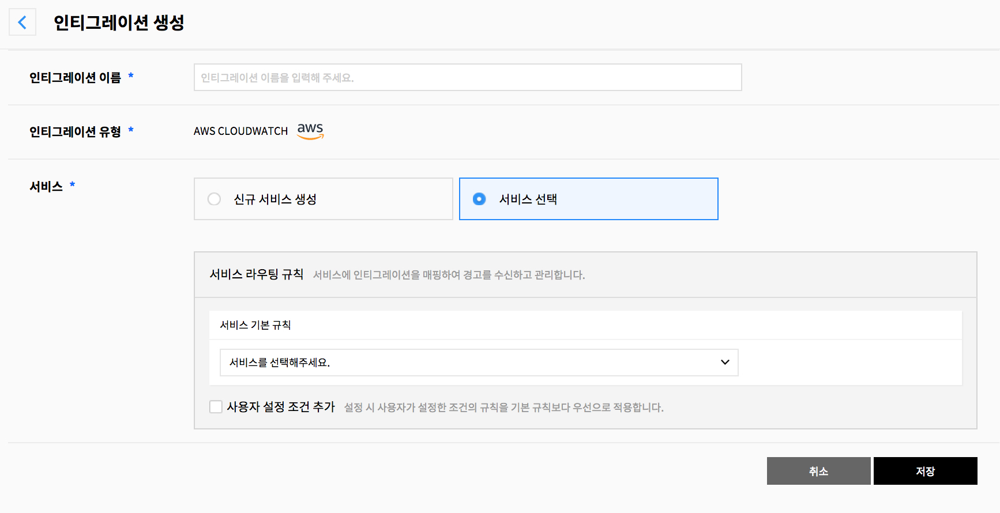항목 설명 비고 Service routing rules 기본 라우팅 Service를 선택합니다.
Add custom criteria 의 조건 항목( Alert Summary, Alert Metric Name, Alert Resource Id) 설정을 통해 서비스 라우팅 설정을 할 수 있습니다.필수 선택 사항. - Create Service
5단계 : 생성 Integration 저장
“Integration Name”을 입력하고, 사용자의 설정에 따른 Service를 생성, 혹은 선택한 후에 우측 하단의 “SAVE” 버튼을 클릭 합니다.6단계 : 생성 Integration 정보 확인
5단계 수행 후, 아래 화면으로 자동 이동 합니다.

위 정보 중 “URL” 의 경우, AWS Console 상에서 SNS(Simple Notification Service) 에서 Alert와 연결하기 위한 SNS Webhook URL 정보로 Copy를 해 두시기 바랍니다.
AWS SNS Dashboard
AWS Cloud Watch를 Alert에서 생성한 Integration과 연결 시키기 위해서 AWS Console에 접속하여 Topic을 생성하여야 합니다.
AWS Console 접속
SNS Dashboard 로 이동 합니다.
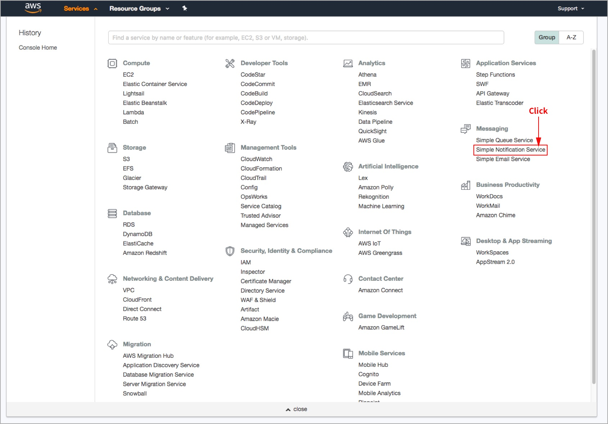
SNS Dashboard 이동
SNS Dashboard 에서 Create topic을 선택 합니다.
1단계 : Create New Topic

입력 항목은 다음과 같습니다.
항목 설명 비고 Topic Name 메시지 전송 및 알림 구독을 위한 커뮤니케이션 채널이며 이후 생성 Topic에 대한 ARN 작성하는데 활용 됩니다.
Topic Name ARN 예시 :arn:aws:sns:us-west-2:111122223333:MyTopic입력 필수 항목 Display Name SMS 구독 시, 표현 되어지는 Topic에 대한 Display Name 입니다. 입력 옵션 항목 “Create topic”을 Click 합니다.
2단계 : Create Subscription
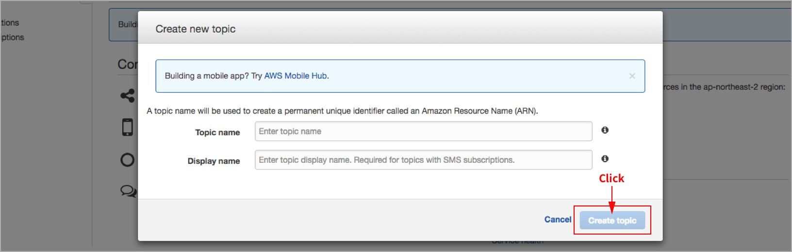
“Create Subscription”을 Click 합니다.

다음과 같은 입력 창이 보입니다.
입력 항목은 다음과 같습니다.
항목 설명 비고 Topic ARN 생성한 Topic Name을 기준으로 자동으로 반영 되어 있습니다. 수정 가능 Protocol HTTPS로 선택 합니다. 선택 항목 :
HTTP / HTTPS / Email / Email-JSON / Amazon SQS / Application / AWS LambdaEndpoint 기존 Alert에서 저장해둔 URL을 Paste 합니다. 입력 항목 “Create Subscription”을 선택 합니다.
3단계 : Subscription
아래와 같은 Subscription이 생성이 됩니다.

오른쪽 상위 Refresh Icon을 Click 합니다. Subscription ID에 대한 승인 확인이 이루어 집니다.
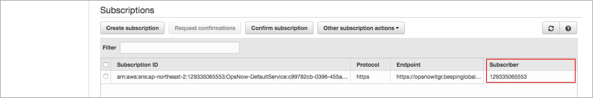
EC2 Console 이동
Alert로 연결할 Alert을 생성하기 위해 EC2 Console로 이동 합니다.
1단계 : Add / Edit Alarm 선택
해당 EC2 선택 후, 아래와 같이 Action > CloudWatch Monitoring > Add/Edit Alarm을 선택 합니다.

2단계 : Create Alarm

“Create Alarm”을 선택 합니다.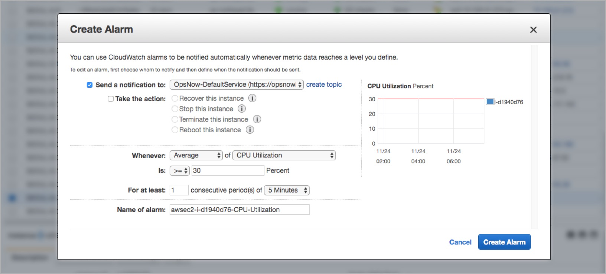
입력 항목은 다음과 같습니다.항목 설명 비고 Send a notification to 생성한 Topic을 찾아서 선택 합니다. 선택 항목 Whenever 해당 임계 치를 설정 합니다. 입력 항목 “Create Alarm”을 생성하면 다음과 같은 메시지가 보입니다.
[][integration_ec2_04]
AlertNow > Incidents
AlertNow초기 접속 시, “Incidents” 화면이 Default로 Display 됩니다.
서비스 처음 접속 초기 화면
처음 접속한 고객의 경우, “No Incidents” 가 보여 집니다. 추후 초기 Setting 절차를 고객이 직접 설정 할 수 있도록 유도하는 Wizard 기능이 제공 될 예정 입니다.
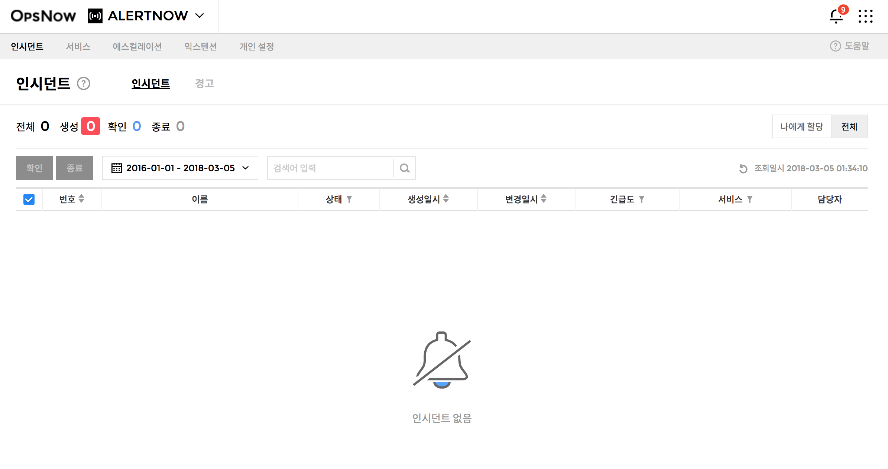서비스 초기 화면
Integration 가이드에 따라 AWS Cloud Watch에 대한 Integration 생성과 AWS Console 상에서 Alarm 설정을 완료 한 경우, 접속과 동시에 Incident를 확인 할 수 있습니다.

Extensions
Extension은 AlertNow 내에서 생성된 인시던트 생성 push를 외부 Tool이나 서비스로 Outgoing할 수 있도록 하는 기능 입니다.
현재 Slack을 지원 하고 있으며, Slack에 대한 Extension 설정은 다음과 같습니다.
AlertNow Extension Slack 설정
1단계 : Extensions 메뉴 선택
Extensions 메뉴를 클릭 합니다.

2단계 : Slack Icon 선택
“Set up for Extension” 버튼을 클릭 합니다.
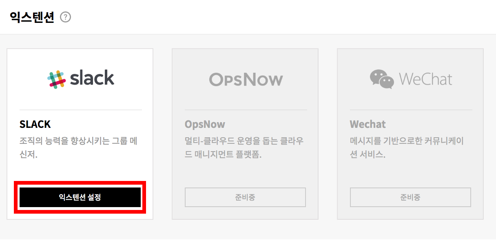3단계 : 새로운 Contact을 생성
“Add new Contact” 버튼을 클릭 합니다.

4단계 : Slack을 설정
“Slack” 선택 합니다.
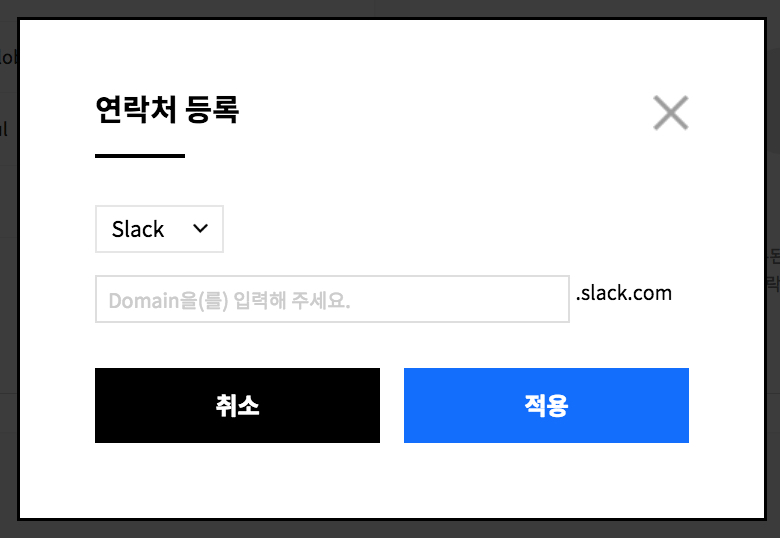
“Create New” 선택하여, Slack 도메인을 생성 합니다.
Slack 설정 : Slack 화면으로 이동
Slack에 Sign-In 합니다. Slack에 가입이 안되어 있는 경우, Slack 가입이 우선 되어야 합니다.
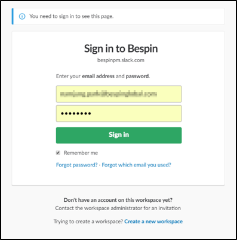
1단계 : AlertNow에 대한 Slack 승인
아래의 내용을 확인 한 후, “Authorize”를 선택 합니다.
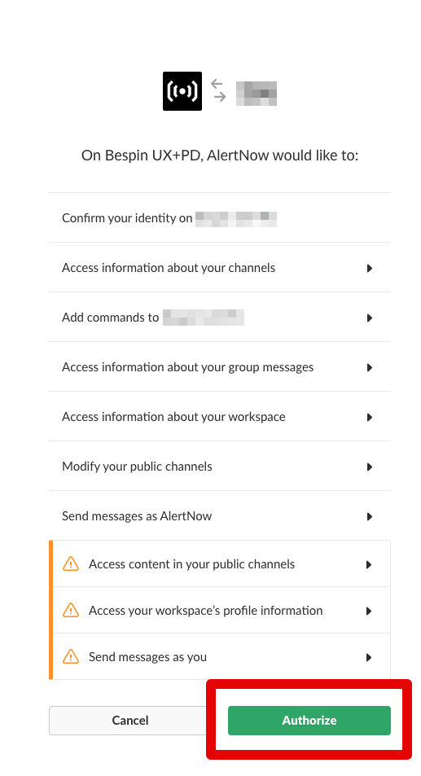

위와 같은 메시지가 나옵니다.
“OK”를 선택 합니다.2단계 : AlertNow에서 확인
AlertNow “Personal Setting” 메뉴에서 Contact method에 생성한 Slack Domain이 추가 된 것을 확인 합니다.
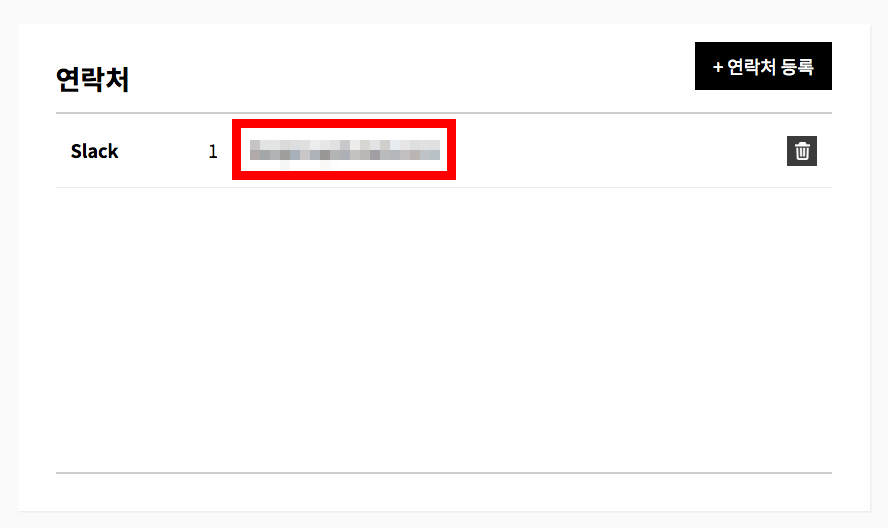
Personal Settings
개인의 기본 정보(Profile)와 개인이 Notification을 받기 위한 Contact 방법, Notification Rule을 관리하는 서비스 입니다.
Personal Settings 메뉴를 Click 합니다.
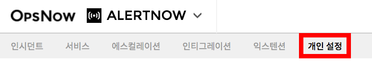
Personal Settings 구성은 다음과 같습니다.
| 서비스 Tab 구성 | 설명 |
|---|---|
| Basic Information | 개인 정보로 구성되어 있습니다.
|
| Contact method | 알람을 받을 연락처들을 등록 합니다. |
| Notification rules | 사용자가 Notification을 받는 Case, 조건, 방식을 설정 합니다. 사용자는 Notification Case 및 조건 별로 Rule을 설정해 자신이 원하는 방식으로 Notification을 받을 수 있습니다. |
Basic Information
개인 Profile과 Contact Method 정보를 Display 및 설정 할 수 있습니다.
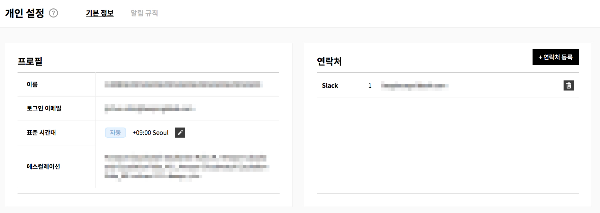
Profile
Profile 구성 정보는 다음과 같습니다.항목 설명 비고 Name 개인 성명 Login email Login email정보 Time Zones 개인의 경우, 최초 접속 시 사용 Browser TIme으로 설정 - Auto
- 변경 가능
설정 가능 Escalation 개인이 속하거나, 생성한 Escalation Display Time Zone의 경우, Setting 할 수 있습니다.

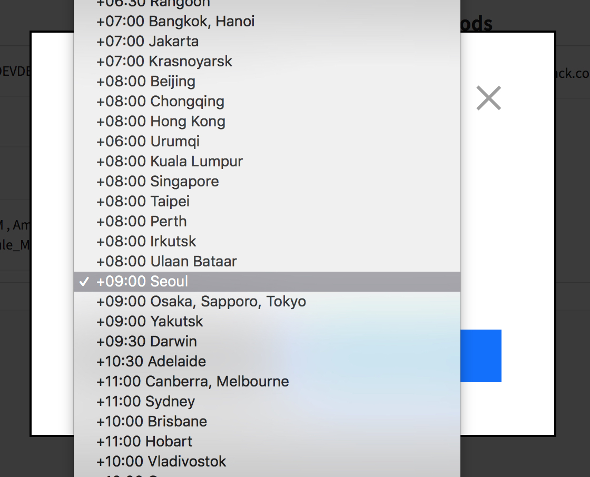Contact Method
Contact Method는 다음과 같이 구성되어 있습니다.구분 설명 비고 Email Noti 받기 위한 Email 정보 변경 가능 Mobile Noti 받기 위한 Mobile 정보 Slack Noti 받기 위한 Slack 정보
Notification Rule
Notification Rule을 설정하거나 설정된 Notification Rule 들을 확인 할 수 있습니다. 사용자 별로 상황에 따른 Noti 발송 여부와 발송 방법을 설정할 수 있습니다.
아래의 상황 별로 Noti 발송 여부와 방법을 설정할 수 있습니다.
| 구분 | 설명 | 비고 |
|---|---|---|
| When an incident is created | Incident가 생성 된 경우 수신할 방법을 설정합니다. | 변경 가능 |
| When an incident is assigned to me | 나에게 Incident가 Assign 되었을 경우 수신할 방법을 설정합니다. | 변경 가능 |
| When a status of incident is changed | Incident의 상태가 변경(Acked,closed) 된 경우 수신할 방법을 설정합니다. | 변경 가능 |
| When an incident is escalated | Incident가 Escalatione된 경우 수신할 방법을 설정합니다. | 변경 가능 |